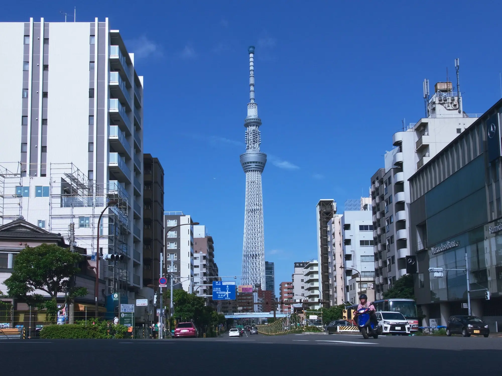
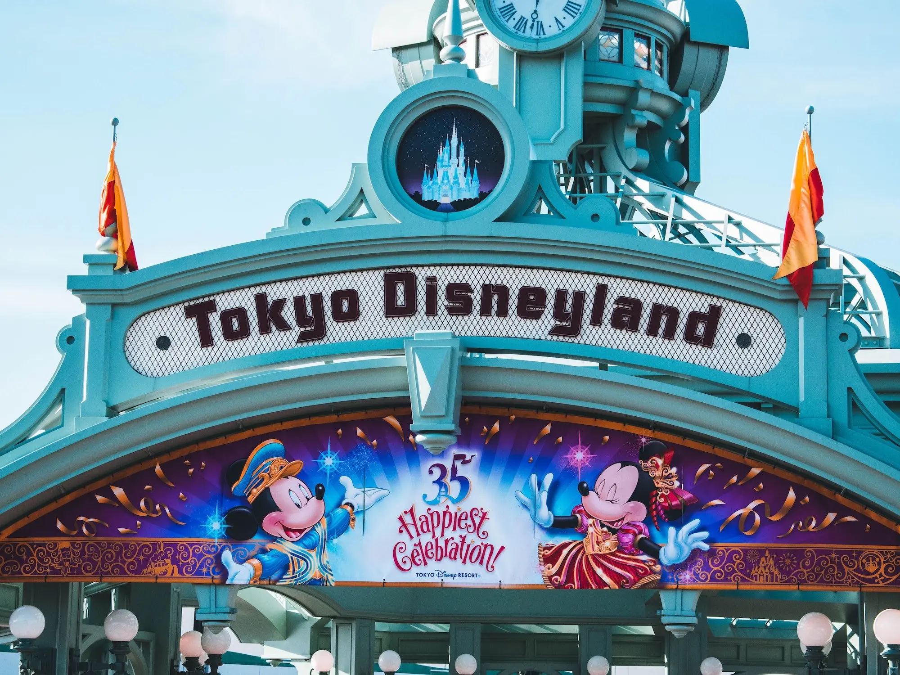

Welcome to the most Futuristic City in the World!
Tokyo, Japan's bustling capital, is a vibrant metropolis known for its seamless blend of tradition and modernity. Skyscrapers tower over historic temples, while neon-lit streets coexist with serene parks. A hub for technology, fashion, and cuisine, Tokyo offers an energetic atmosphere and a rich cultural tapestry that draws millions of visitors each year. It's a city of innovation, with a deep respect for its heritage.
Famous Attractions at Tokyo
-
The Tokyo Skytree

Soar above the city at Tokyo Skytree, the world’s tallest tower at 634 meters. Marvel at panoramic views from its two observation decks—Tembo Deck at 350 meters and Tembo Galleria at 450 meters—offering breathtaking vistas of Tokyo and, on clear days, even Mount Fuji. Experience the thrill of walking on glass floors and enjoy the tower's stunning LED illuminations that light up the skyline each night. Located in the vibrant Tokyo Skytree Town, you can also explore the Tokyo Solamachi shopping complex, dine in sky-high restaurants, and visit the Sumida Aquarium. A visit to Tokyo Skytree promises an unforgettable blend of culture, entertainment, and awe-inspiring sights.
-
Tokyo Disneyland

Step into a world of magic and wonder at Tokyo Disneyland, where fairy tales come to life! Located just outside Tokyo, this enchanting theme park offers thrilling rides, dazzling parades, and beloved Disney characters around every corner. Explore seven themed lands, from Adventureland to Fantasyland, perfect for all ages. Whether you're meeting Mickey Mouse or watching the night-time fireworks, every moment is pure joy. A visit to Tokyo Disneyland is a dream vacation experience you’ll never forget!
-
The Tokyo Bullet Train

Hop aboard the Tokyo Bullet Train, Japan's iconic Shinkansen, and experience the thrill of high-speed travel like never before. Reaching speeds of up to 200 mph, it offers a smooth, fast, and comfortable ride through scenic landscapes. Whether you're zipping between cities or exploring Japan's vibrant regions, the Bullet Train promises an unforgettable journey that blends modern technology with scenic beauty. Don’t miss this iconic experience when visiting Tokyo!
-
The Tokyo Skyline

The Tokyo skyline is a breathtaking blend of modern architecture and traditional beauty, where towering skyscrapers meet ancient temples. At night, the city comes alive with neon lights that stretch as far as the eye can see, creating a dazzling, futuristic atmosphere. Iconic landmarks like the Tokyo Tower and Tokyo Skytree rise above the urban landscape, offering panoramic views of this vibrant metropolis. Whether you’re admiring it from a rooftop bar or taking a stroll along the Sumida River, the Tokyo skyline promises an unforgettable experience that captures the pulse of Japan’s capital.
-
The Shibuya Crossing

Shibuya Crossing is one of the world’s most iconic sights, where hundreds of people converge at every light change in a seamless, vibrant dance of motion. Surrounded by towering screens and neon lights, this bustling intersection offers an electrifying glimpse into Tokyo’s energy and urban rhythm. Whether you’re crossing the street or watching from a nearby café, it’s an experience that captures the essence of the city’s hustle and global influence. Shibuya Crossing is a must-see for anyone wanting to immerse themselves in the heart of Tokyo’s fast-paced culture.